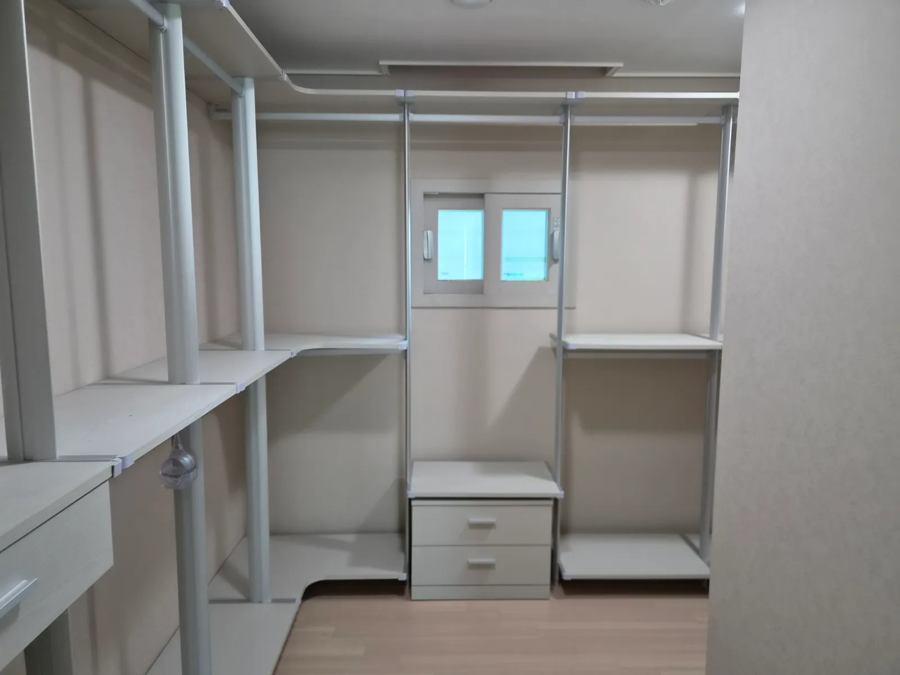

Gyeonggi
경기
시스템행거 이전설치
경기권은 이동 거리와 입주 일정이 작업 계획을 좌우합니다.
경기 지역은 신축 아파트 입주가 이어지고, 같은 경기 안에서도 도시 사이 거리가 멀어 이동 시간이 일정에 큰 영향을 줍니다. 신축 아파트는 드레스룸 크기와 천장 높이가 이전 집과 달라 배치를 새로 잡아야 하는 경우도 많습니다.
코니처는 경기 지역 현장을 방문해 시스템행거 이전설치를 진행합니다. 입주 날짜와 이삿짐 일정을 알려주시면 해체와 설치를 같은 날 할지, 나눠서 할지 함께 정합니다.

Situations
경기 지역에서 자주 있는 경우
신축 아파트 입주
새 드레스룸 치수에 맞춰 기존 행거를 다시 구성합니다.
경기 안에서 도시 간 이사
이동 거리를 고려해 일정을 짭니다.
전원주택·타운하우스
층이 나뉜 집은 운반 동선을 먼저 확인합니다.
경기에서 서울로 이사
수도권 안 이동이면 같은 방식으로 진행합니다.
Checklist
경기 이사 때 확인하는 것
| 항목 | 확인 내용 | 필요한 이유 |
|---|---|---|
| 입주일 | 새 집 입주 가능 날짜 | 설치 날짜를 정합니다 |
| 이동 거리 | 출발 도시와 도착 도시 | 이동 시간을 계산합니다 |
| 신축 여부 | 입주 청소·점검 일정 | 설치 순서를 정합니다 |
| 드레스룸 형태 | 새 집 평면도 | 배치를 미리 정합니다 |
| 엘리베이터 | 입주 기간 예약 | 운반 시간을 맞춥니다 |
Process
경기 이전설치 진행 순서
평면도·일정 상담
새 집 평면도와 입주 일정을 받습니다.
새 배치 정하기
평면도의 드레스룸 치수로 배치를 미리 정합니다.
해체
기존 집에서 칸별로 해체합니다.
이동·설치
새 집으로 옮겨 정한 배치대로 설치합니다.
점검
수평과 흔들림을 확인합니다.
FAQ
자주 묻는 질문
경기 어느 지역까지 가나요?
경기 지역은 방문 상담이 가능합니다. 주소를 알려주시면 일정을 확인해 드립니다.
입주 기간이라 엘리베이터 예약이 어렵대요
입주 기간에는 예약이 몰리니 이삿짐 일정과 함께 미리 잡아 두시는 게 좋습니다.
신축인데 벽에 고정해도 되나요?
새 벽의 재질을 확인하고 고정이 필요한 경우 방법을 안내합니다. 천장·바닥 지지형은 벽을 쓰지 않기도 합니다.
평면도만 있는데 배치를 정할 수 있나요?
네, 평면도에 드레스룸 치수가 나와 있으면 미리 배치를 정할 수 있습니다.
이삿짐센터와 날짜가 다르면요?
해체와 설치를 다른 날로 나눠 진행할 수 있습니다.